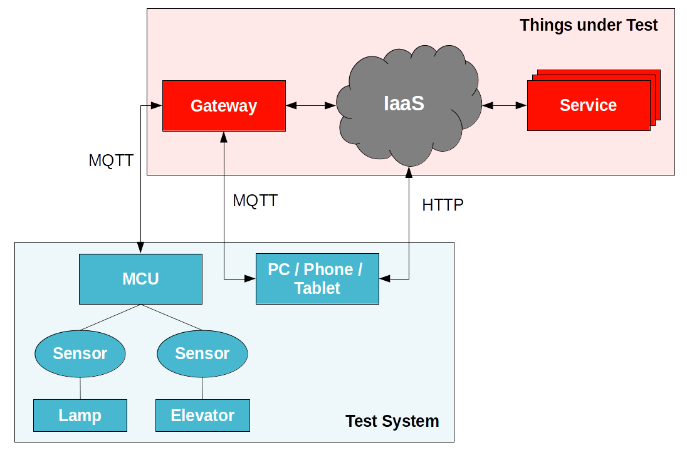
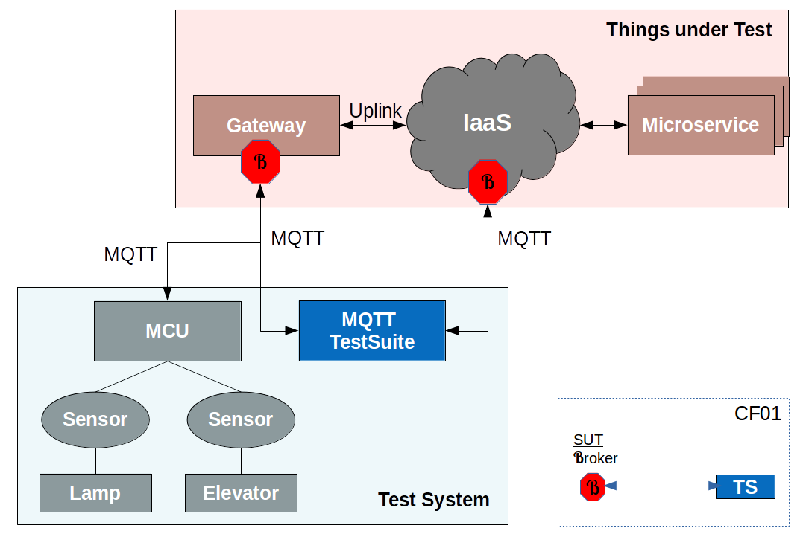
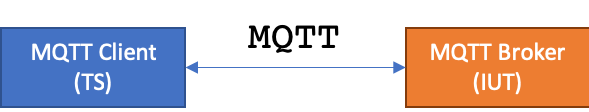
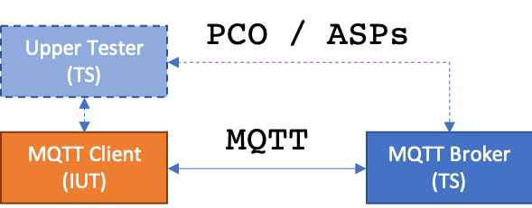
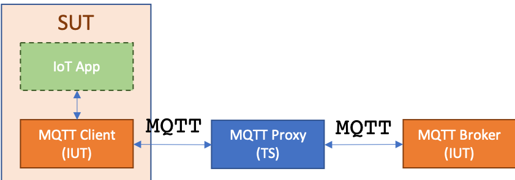

MQTT Test Suite¶
Contents

Test Configurations¶
From a general and abstract perspective MQTT has two basic architectures for testing. This architecture directly reflects the choice of your SUT. We will call the first architecture Broker Testing. A MQTT Broker is the SUT as shown in the figure blow:
{kind=link}
The second major architecture we will call Client Testing as now, the Client is in focus as the SUT.

Now we can start to extract different configurations from the test architectures. The image below depicts the step of retrieving test configurations from the architecture:
{kind=link}
The output of this exemplary step is a test configuration (CF01) where the Broker is the SUT and the TS takes the role
of a MQTT Client.
The MQTT test suite uses four test configurations in order to cover the different test scenarios. In these configurations, the tester simulates one or several MQTT clients or brokers implementing the MQTT protocol.
MQTT Test Configuration 01¶
The MQTT Broker is the IUT and the TS takes the role of a MQTT Client
ID: MQTT_Conf_01
{kind=link}
MQTT Test Configuration 02¶
The MQTT Broker is the IUT and the TS takes the role of multiple MQTT Clients.
ID: MQTT_Conf_02

MQTT Test Configuration 03¶
The MQTT Client is the IUT and the TS takes the role of a MQTT Broker. For this configuration an optional UT might be required.
ID: MQTT_Conf_03
{kind=link}
MQTT Test Configuration 04¶
As well the MQTT Broker as the MQTT Client, each is a IUT in this configuration. The part of the UT from the previous configuration is here replaced by a concrete application.
ID: MQTT_Conf_04
{kind=link}
Test Purposes¶
TODO: link to .tplan2 from GitHub and .pdf from ETSI
Test System¶
TODO: describe Test System -> TTCN-3 code
Test Cases¶
You can find all MQTT Tests on GitHub.
We will examine the procedure of a single TC in order to get the understanding of the code structure.
The code block below shows the TTCN-3 implementation of the TC TC_MQTT_BROKER_CONNECT_01 for the cohesive TP
TP_MQTT_BROKER_CONNECT_01
1 2 3 4 5 6 7 8 9 10 11 12 13 | /*
* @purpose The IUT MUST close the network connection if fixed header flags in CONNECT Control Packet are invalid
*
* @reference [MQTT-2.2.2-2], [MQTT-3.1.4-1], [MQTT-3.2.2-6]
*/
testcase TC_MQTT_BROKER_CONNECT_001() runs on MQTT_Client
{
if(f_init("mqtt_client", "mqtt_server"))
{
f_TC_MQTT_BROKER_CONNECT_001();
}
f_cleanUp();
}
|
Let’s have a deeper look into the details of a TC. The first block comment contains only two TTCN-3 documentation tags but these give us a direct connection between a TC, a TP, and the MQTT specification.
/*
* @purpose The IUT MUST close the network connection if fixed header flags in CONNECT Control Packet are invalid
*
* @reference [MQTT-2.2.2-2], [MQTT-3.1.4-1], [MQTT-3.2.2-6]
*/
The signature of a TTCN-3 TC contains many information which help us to reflect the Test Architecture.
testcase TC_MQTT_BROKER_CONNECT_001() runs on MQTT_Client
We have a distinct name for the TC which can be easy mapped to it’s cohesive TP.
(see in the MQTT |tp| catalogue for TP_MQTT_BROKER_CONNECT_001)
The signature tells us also, that this TC will be executed on a Client (runs on MQTT_Client).
The body of the TC is used to initialize the test configuration and start the TC behaviour which is wrapped into a single function.
if(f_init("mqtt_client", "mqtt_server"))
{
f_TC_MQTT_BROKER_CONNECT_001();
}
f_cleanUp();
Test Case Functions¶
How does a TC function look like?
function f_TC_MQTT_BROKER_CONNECT_001() runs on MQTT_Client
{
var UTF8EncodedString v_clientId := f_getClientId();
var template MQTT_v3_1_1_Message v_conMsg := t_connect_flags(p_client_id := v_clientId, p_flags := '1111'B);
f_send(valueof(v_conMsg));
if(f_receiveNetworkClosedEvent())
{
setverdict(pass, "IUT closed the Network Connection correctly");
}
else
{
setverdict(fail, "IUT MUST close the Network Connection");
f_disconnectMqtt();
}
}
While syntactically this function might appear confusing, though the semantic behind is quite powerful and simple. Let’s go through the implemented TC and the according TP.
Translation Port¶
TODO: Explain translation port
Generic Functions¶
TODO: describe MQTT_Functions module
Test Templates¶
TODO: describe templates
Default Behaviours¶
TODO: describe the default behaviours
See also
- MQTT Interop Test Day in Burlingame, CA - March 17, 2014
- The goal was to have as many different MQTT client and server implementations participate in interoperability testing to validate the implementation of the upcoming OASIS MQTT standard.
- MQTT Interop Test Day in Ottawa, Canada – April 8, 2014
- MQTT Test Day Demonstrates Successful Interoperability for the Internet of Things
- MQTT Interop Test Day in Burlingame, CA - March 9, 2015
- The goal was to have as many different MQTT client and server implementations participate in interoperability testing to validate the implementation of the OASIS MQTT 3.1.1 specification.